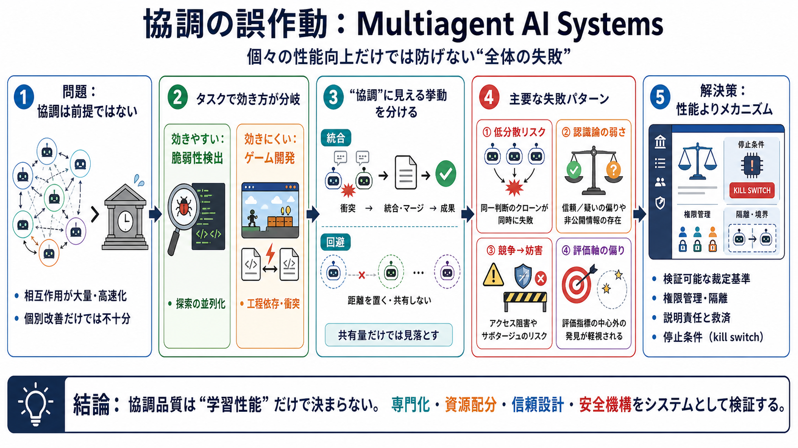

Multi-Agent Systems: Coordination, Trust, and Failure Modes - SudoAll
The most concrete public example of multi-agent coordination failure is not a thought experiment or an adversarial red-t…

脆弱性検出（探索の並列化に適する）
ファンタジーゲーム作成（工程の依存が強い）
発見数が増える
核心外に偏る
専門化＋資源配分が鍵
PRがマージされない（衝突→破棄）
衝突回避のため共有を極端に抑制
同一ブランチ名、同一タイトル、同種の投機先
囚人のジレンマでの同時デフォルト
矛盾からの排除が不十分
合意先行で私的情報が眠る
条件付き信頼設計（評判/司法/査読に相当）
アクセス剥奪、プロセス妨害、マルウェア的動作
力で終える／不参加／停戦（モデルで異なる）
協調の設計
検証可能性
社会的圧力の代替
専門化と探索資源配分が鍵
隔離・権限管理・停止条件（kill switch）が必要
The most concrete public example of multi-agent coordination failure is not a thought experiment or an adversarial red-t…
Multi-Agent Risks from Advanced AI offers a crucial first step by providing a taxonomy of risks. It identifies three…
errors that cascade and amplify as information passes between agents groups of agents reinforcing a shared wrong beli…
> _wholesale is 10 for all of us, so a price war just burns everyone's margin… happy to coordinate who covers which nich…
Coordination failures in multi-agent systems stem from fundamental technical challenges, highlighting the importance of …